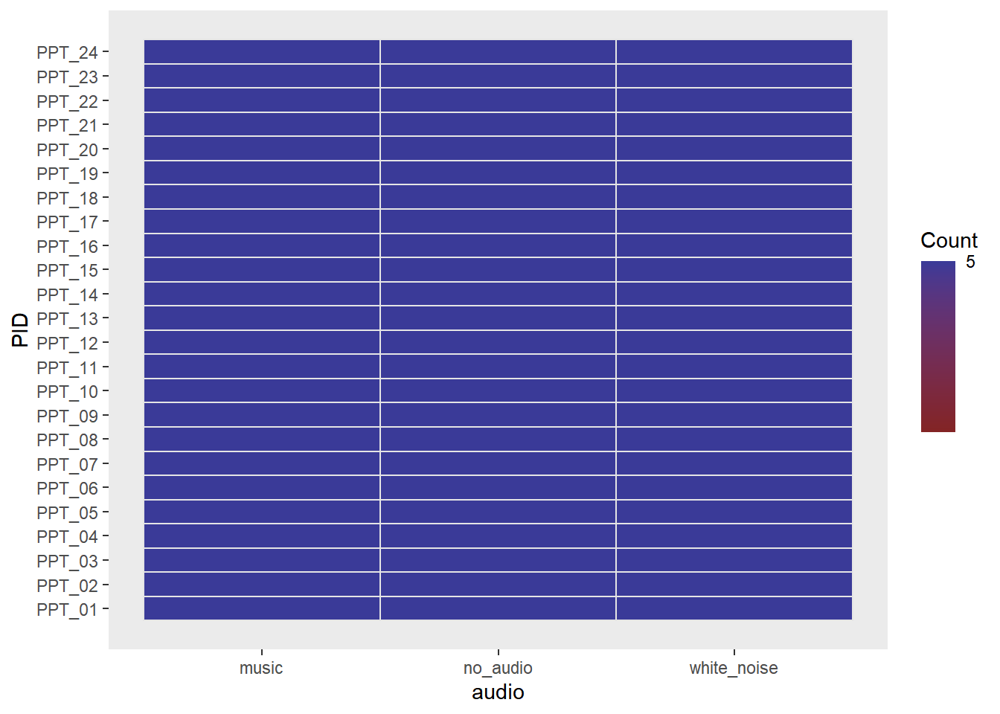
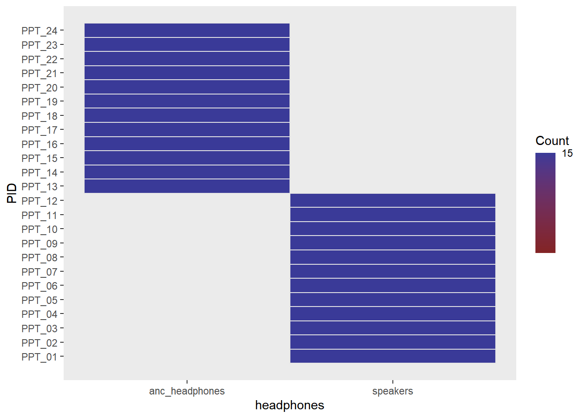
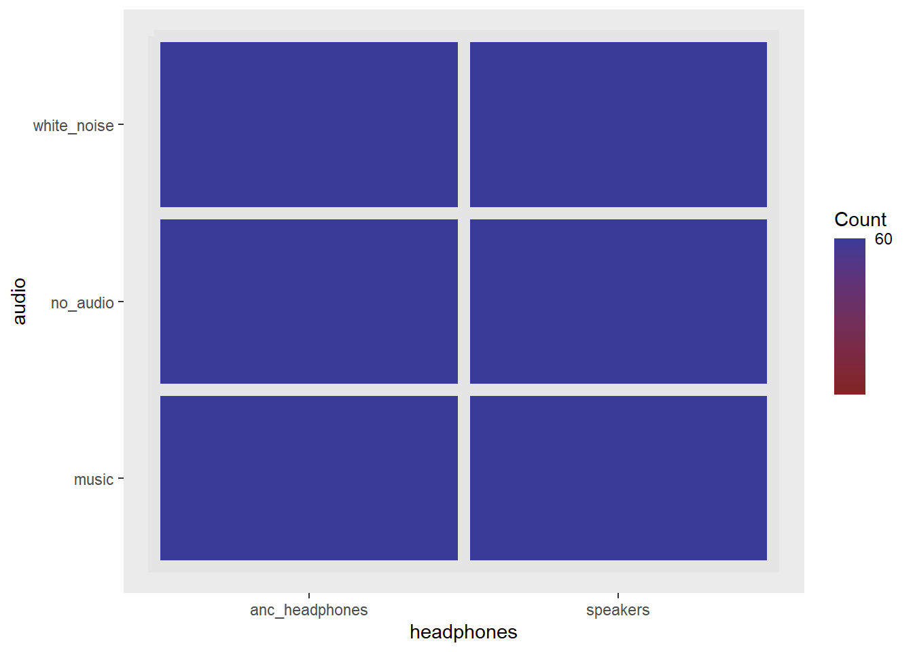
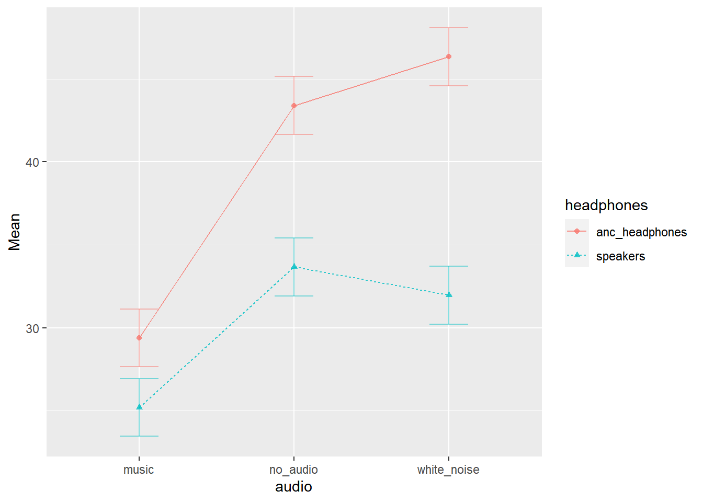
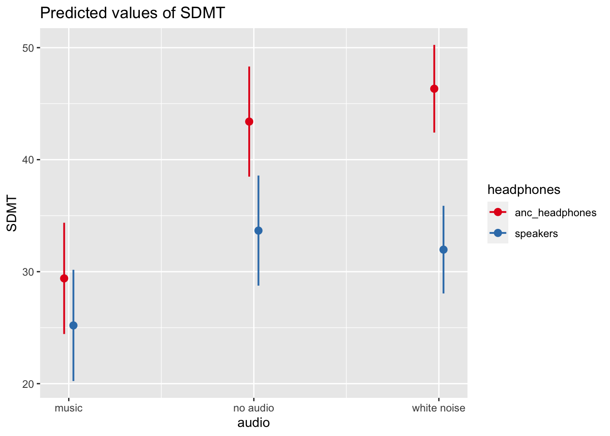

| variable | description |
|---|---|
| PID | Participant ID |
| trial_n | Trial Number (1-15) |
| audio | Audio heard during the test (‘no_audio’, ‘white_noise’,‘music’) |
| headphones | Whether the participant listened via speakers in the room or via noise cancelling headphones |
Analysis Example: Rpt & Mixed ANOVA
This is optional for the DAPR3 course, but may be useful for your dissertations should your field/supervisor prefer the ANOVA framework to that of the linear model.
This walks briefly through these models with the ez package. There are many other packages available, and many good tutorials online should you desire extra resources in the future:
- https://www.datanovia.com/en/lessons/repeated-measures-anova-in-r
- https://www.r-bloggers.com/2021/04/repeated-measures-of-anova-in-r-complete-tutorial/
- https://stats.idre.ucla.edu/r/seminars/repeated-measures-analysis-with-r/
- https://www.datanovia.com/en/lessons/mixed-anova-in-r/
Data: Audio interference in executive functioning
This data is from a simulated study that aims to investigate the following research questions:
How do different types of audio interfere with executive functioning, and does this interference differ depending upon whether or not noise-cancelling headphones are used?
24 healthy volunteers each completed the Symbol Digit Modalities Test (SDMT) - a commonly used test to assess processing speed and motor speed - a total of 15 times. During the tests, participants listened to either no audio (5 tests), white noise (5 tests) or classical music (5 tests). Half the participants listened via active-noise-cancelling headphones, and the other half listened via speakers in the room.
The data is in stored in two separate files - the research administering the tests recorded the SDMT score in one spreadsheet, while details of the audio used in the experiment are held in a separate sheet
- Information about the audio condition for each trial of each participant is stored in .csv format at https://uoepsy.github.io/data/ef_music.csv. The data is in long format (1 row per participant-trial).
- Information on participants’ Symbol Digit Modalities Test (SDMT) for each trial is stored in .xlsx format at https://uoepsy.github.io/data/ef_sdmt.xlsx. The data is in wide format (1 row per participant, 1 column per trial).
| variable | description |
|---|---|
| PID | Participant ID |
| Trial_01 | SDMT score in trial 1 |
| Trial_02 | SDMT score in trial 2 |
| Trial_03 | SDMT score in trial 3 |
| … | SDMT score in trial … |
| … | SDMT score in trial … |
| Trial_15 | SDMT score in trial 15 |
The code below will read in both datasets and join them for you:
Code
library(tidyverse)
library(readxl)
download.file(url = "https://uoepsy.github.io/data/ef_sdmt.xlsx",
destfile = "ef_sdmt.xlsx",
mode = "wb")
efdata <-
left_join(
read_csv("https://uoepsy.github.io/data/ef_music.csv"),
read_xlsx("ef_sdmt.xlsx") %>%
pivot_longer(Trial_01:Trial_15, names_to = "trial_n", values_to = "SDMT")
)One-Way Repeated Measures ANOVA
For a repeated measures ANOVA, we have one independent variable that is within group.
This would be appropriate if our research question were the following:
How do different types of audio interfere with executive functioning?
Mapping this to the variables in our dataset, our model is going to be SDMT ~ audio, and we want to account for PID differences. So for now we will ignore the headphones variable.
Code
head(efdata)# A tibble: 6 × 5
PID trial_n audio headphones SDMT
<chr> <chr> <chr> <chr> <dbl>
1 PPT_01 Trial_02 no_audio speakers 31
2 PPT_01 Trial_08 no_audio speakers 23
3 PPT_01 Trial_11 no_audio speakers 23
4 PPT_01 Trial_13 no_audio speakers 24
5 PPT_01 Trial_15 no_audio speakers 34
6 PPT_01 Trial_01 white_noise speakers 38The easiest way to conduct a repeated measures ANOVA in R is to use the ez package, which comes with some handy functions to visualise the experimental design.
We can see from below that every participant completed 5 trials for each type of audio interference:
Code
library(ez)
ezDesign(data = efdata, x = audio, y = PID)
The ezANOVA() function takes a few arguments.
The ones you will need for this are:
- data the name of the dataframe
- dv the column name for the dependent variable
- wid the column name for the participant id variable
- within the column name(s) for the predictor variable(s) that vary within participants
- between the column name(s) for any predictor variable(s) that vary between participants
Fit a repeated measures ANOVA to examine the effect of the audio type on SDMT:
Code
ezANOVA(data = efdata, dv = SDMT, wid = PID, within = audio)$ANOVA
Effect DFn DFd F p p<.05 ges
2 audio 2 46 44.69618 1.647271e-11 * 0.2534633
$`Mauchly's Test for Sphericity`
Effect W p p<.05
2 audio 0.8105961 0.09927715
$`Sphericity Corrections`
Effect GGe p[GG] p[GG]<.05 HFe p[HF] p[HF]<.05
2 audio 0.8407573 5.0677e-10 * 0.899603 1.427119e-10 *Mixed ANOVA
Mixed ANOVA can be used to investigate effects of independent variables that are at two different levels, i.e. some are within clusters and some are between.
Does the effect of audio interference on executive functioning differ depending upon whether or not noise-cancelling headphones are used?
Look at the two lines below. Can you work out what the plots will look like before you run them?
Code
ezDesign(data = efdata, x = headphones, y = PID)
ezDesign(data = efdata, x = headphones, y = audio)Participants 1-20 are in one condition, and 21-40 are in another.
This should look like a two big blocks on the diagonal.
Code
ezDesign(data = efdata, x = headphones, y = PID)
In each condition, all different types of audio were observed in the same number of trials. This should be a full grid:
Code
ezDesign(data = efdata, x = headphones, y = audio)
Fit a mixed ANOVA to examine the interaction between audio and headphone use on SDMT:
Code
ezANOVA(data = efdata, dv = SDMT, wid = PID, within = audio, between = headphones)$ANOVA
Effect DFn DFd F p p<.05 ges
2 headphones 1 22 9.815545 4.836945e-03 * 0.26784992
3 audio 2 44 59.615596 2.980503e-13 * 0.32788320
4 headphones:audio 2 44 8.677316 6.657590e-04 * 0.06629911
$`Mauchly's Test for Sphericity`
Effect W p p<.05
3 audio 0.9422531 0.5355001
4 headphones:audio 0.9422531 0.5355001
$`Sphericity Corrections`
Effect GGe p[GG] p[GG]<.05 HFe p[HF]
3 audio 0.9454057 1.196469e-12 * 1.031585 2.980503e-13
4 headphones:audio 0.9454057 8.648057e-04 * 1.031585 6.657590e-04
p[HF]<.05
3 *
4 *The ez package also contains some easy plotting functions for factorial experiments, such as ezPlot(). It takes similar arguments to the ezANOVA() function.
- look up the help documentation for
ezPlot(). - let’s use
ezPlot()to make a nice plot
Code
ezPlot(data = efdata, dv = SDMT,
wid = PID, within = audio, between = headphones,
x = audio, split = headphones)
The same thing in lmer
Code
library(lme4)
library(lmerTest)
mod <- lmer(SDMT ~ 1 + headphones * audio + (1 + audio | PID),
data = efdata)
anova(mod, type="III")Type III Analysis of Variance Table with Satterthwaite's method
Sum Sq Mean Sq NumDF DenDF F value Pr(>F)
headphones 325.0 325.04 1 22 9.8155 0.004837 **
audio 3212.0 1606.01 2 22 48.4976 8.626e-09 ***
headphones:audio 490.1 245.06 2 22 7.4001 0.003486 **
---
Signif. codes: 0 '***' 0.001 '**' 0.01 '*' 0.05 '.' 0.1 ' ' 1Code
library(sjPlot)
plot_model(mod, type="eff", terms=c("audio","headphones"))